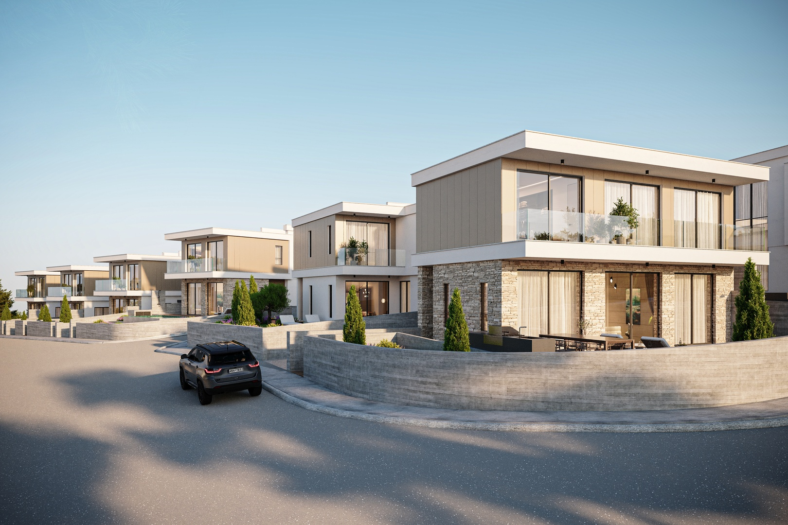

ПМЖ и второй дом
Проверяем, подходит ли ваш случай под условия программы, и ищем первую продажу от девелопера.
Кипр · Пафос и Лимассол
Подберём несколько вилл и резиденций в бюджете от €600 000. Сравним качество, локацию, расходы и потенциал аренды — для переезда, второго дома или инвестиций.

Amore Homes · визуализация проекта
Кому подойдёт
Поэтому не присылаем случайный каталог. Сначала понимаем, что для вас важнее: статус, жизнь на острове, доход от аренды или всё сразу.
Проверяем, подходит ли ваш случай под условия программы, и ищем первую продажу от девелопера.
Смотрим район, готовность дома, инфраструктуру и то, как будет устроена обычная жизнь.
Раскладываем цену входа, платежи, срок готовности и аренду — без обещаний процента.
Что получите
После короткой консультации вы знаете реальную сумму покупки, понимаете, какие районы вам подходят, и получаете 3–5 вариантов для предметного разговора.
Цена квартиры, VAT и платежи — отдельными строками, а не одной цифрой в рекламе.
Пафос или Лимассол, готовый дом или стройка, для себя или под аренду.
3–5 новостроек, которые можно проверить: район, срок сдачи, оплата и наличие.
Ориентиры подбора
В рабочем реестре есть проекты для разных задач. Это диапазоны проектов, а не цены конкретных свободных лотов: актуальные варианты и несколько альтернатив в вашем сегменте подтвердим перед отправкой.
Пафос · Konia
€550–700k + VAT · диапазон проекта
Виллы с 3–4 спальнями для семейной жизни. Для этой подборки проверяем варианты от €600k.
Запросить доступные виллы ↗Пафос · Coral Bay / Pegeia
€912k–2.61m + VAT · диапазон проекта
Виллы с 2–6 спальнями и инфраструктурой комплекса. Рассматриваем разные площади и планировки.
Сравнить варианты ↗Лимассол · побережье
от €2.72m + VAT · диапазон проекта
Брендированные виллы и резиденции для тех, кому важны морская локация и сервис.
Уточнить наличие ↗Ориентиры из переданного реестра проектов. Цены, наличие, условия оплаты и право на покупку проверяются перед индивидуальным предложением; доход от аренды рассчитывается по конкретному объекту.
€600–999 тыс. · €1–1,49 млн · €1,5–1,99 млн · €2–2,49 млн · €2,5–2,99 млн · €3 млн и выше
Подобрать несколько вариантовГде искать
Не бывает города «лучше для всех». Смотрим, как вы будете пользоваться квартирой: жить постоянно, приезжать зимой или сдавать.
Пафос
Чаще рассматривают для семьи, зимовки и второго дома без суеты большого города.
Лимассол
Подходит, когда важны инфраструктура, деловая среда, школы и жизнь в городе круглый год.
Отдельно о статусе
По действующей программе иммиграционного разрешения инвестора одна из категорий — покупка нового жилья у девелопера на сумму не менее €300 000 + VAT. Дополнительно проверяются подтверждённый годовой доход, источник средств и другие условия. Для основного заявителя ориентир дохода — от €50 000 в год, плюс суммы на членов семьи по правилам программы. Покупка сама по себе не гарантирует статус. Официальные условия ↗
€300 000 + VAT — порог конкретной программы, а не бюджет объектов на этой странице. Основной подбор Nika Estate здесь начинается от €600 000.
Консультация и подбор
Оставьте контакт, цель и бюджет. Мы уточним критерии и сравним доступные объекты по качеству, полной стоимости, аренде и сроку готовности.
Условия ПМЖ проверяем отдельно от инвестиционной привлекательности объекта.